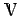
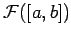

Inhalt Index DeskTop Bronstein

 Funktionalanalysis Vektorräume Geordnete Vektorräume Vektorverbände
Funktionalanalysis Vektorräume Geordnete Vektorräume Vektorverbände


Im Vektorraum der reellen Zahlen sind die Begriffe (o)-Beschränktheit und Beschränktheit (im herkömmlichen Sinne) identisch. Es ist bekannt, daß jede von oben beschränkte Menge reeller Zahlen in ihr Supremum - die kleinste aller oberen Schranken - besitzt. Analog, wenn eine Menge reller Zahlen von unten beschränkt ist, dann besitzt sie ihr Infimum - die größte aller unteren Schranken. In einem allgemeinen geordneten Vektorraum kann die Existenz von Supremum und Infimum i.allg. nicht einmal für endliche Teilmengen nachgewiesen, sondern muß per Axiom gefordert werden. Ein geordneter Vektorraum  heißt Vektorverband oder linearer Verband (in der englischsprachigen Literatur auch RIESZscher Raum bzw. und in der russischsprachigen Literatur auch K-Lineal), wenn für zwei beliebige Elemente  ein Element mit den folgenden Eigenschaften existiert:
ein Element mit den folgenden Eigenschaften existiert:
| Beispiel A |
|
Im Vektorverband  wird das Supremum von zwei Funktionen x, y punktweise nach der Formel |
| (12.34) |
berechnet. Im Falle von und y(t)=t2 (s. Abbildung) ergibt sich für
| (12.35) |
| (12.36) |